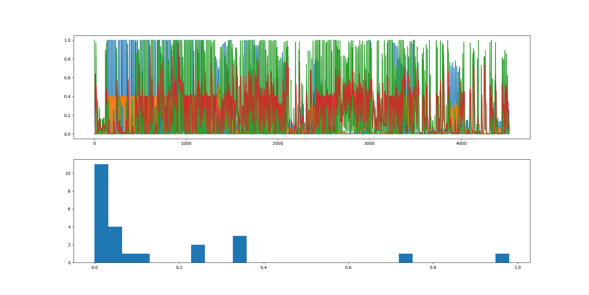

NeoContext is my latest project in Artificial Intelligence. The goal is to combine evolution with reinforcement learning
and an appropriate training set to create models capable of general reasoning. I am currently working with Hierarchical Temporal Memory,
a brain-based AI architecture that mimics the neocortex, to explore this area. This web page is in its very early stages, and will be updated as I develop the project further.
Update 11/15/25: Have successfully implemented the ClassifierRegion, am able to feed tokens to our model. Now, need to map integer values back to tokens for readibility, and greatly expand our dataset, implement a stop token, and begin evolution architecture.
The most recent development has been demonstrating, using HTM.core's anomaly detection, that the network is capable of learning the sequences it is fed! The challenge here is ensuring that the low anomaly isn't due to
the HTM circuits predictingall possible next inputs, but that it is truly learning the proper next token when fed a string of text.
To train the model, sentences of the following format are used: "X is at Y. Z is at W. Where is X?" to test the ability of HTM to extrapolate symbolic and logical formulas from text training examples. Since X, Y, Z, and W can be anything, a successful model needs to learn to focus on the "is at" and "Where is" parts of these sentences, while learning that the answer is simply X. Figuring out how to do this has been rather complicated, with some mixed successes on the way.
An early test of the ability of a one-layer HTM network to learn text sequences of the above form. Later analysis would suggest that the model's prediction radius grew so wide it was effectively predicting all of the possible next tokens, so while it technically was learning the sequences, it wasn't learning them in a way to successfully understand the testing examples in a productive manner. The lower the graph goes, the lower the anomaly, which means the more the model understands the input sequence. Here, there is an overwhelming number of training examples with a low anomaly, as seen in the histogram.
